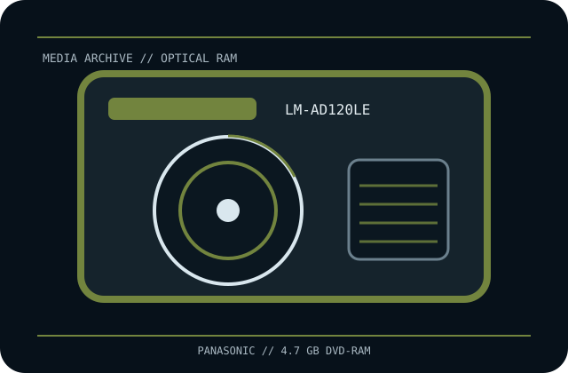

[ REMOVABLE MEDIA // OPTICAL CARTRIDGE ]
Panasonic 4.7 GB DVD-RAM Cartridge (LM-AD120LE)
Panasonic rewritable DVD-RAM medium, exact catalogue SKU LM-AD120LE, listed as a 4.7 GB cartridge product. This record identifies the medium only; drive, recorder, interface, firmware and software are separate.

EXACT SKU: Panasonic LM-AD120LE. Native capacity and software compression are distinct; this optical medium has no vendor-rated tape-style compressed capacity.
Format generation, capacity and compatible drives
| Manufacturer / exact SKU | Panasonic LM-AD120LE DVD-RAM cartridge |
|---|---|
| Format / generation | 12 cm rewritable DVD-RAM, nominal 4.7 GB media generation; cartridge/package configuration is regional and must be checked on the physical label. |
| Native capacity | 4.7 GB nominal optical-media capacity as identified for LM-AD120LE; use the disc’s own side/format markings to confirm capacity available per side. |
| Compressed capacity | Not applicable as an optical-media rating. Any software compression is external, content-dependent and not guaranteed. |
| Compatible drive generations | DVD-RAM-capable drives/recorders that support the corresponding 4.7 GB DVD-RAM generation and accept the cartridge type supplied with the exact package. A bare-disc DVD drive is not automatically cartridge-compatible; check its loading mechanism and manual. |
| Interface and scope | The disc has no host interface. A compatible DVD-RAM drive or recorder supplies its own IDE/ATAPI, SATA, USB or other host connection. |
| Compatibility caveat | Confirm the physical disc/cartridge type and any removable-cartridge requirement from the item label. Do not infer cartridge-loading support from DVD-RAM format support alone or from a similar Panasonic model code. |
Optical-cartridge handling and preservation
Keep the medium in its protective cartridge or case, away from dust, direct sunlight, heat, moisture and impact. Do not touch the disc recording surface or force an unfamiliar cartridge into a loading mechanism. Remove the disc from a removable cartridge only if the specific drive and manufacturer instructions permit it.
- Retain package, label and provenance details; verify format and side/capacity markings before recording.
- Make independent copies, record checksums, verify reads and periodically test restoration; an aging DVD-RAM drive may be harder to replace than the medium.
Model-specific notes
LM-AD120LE is distinct from Panasonic LM-AD240LE 9.4 GB double-sided media and from the bare-disc LM-AF120LE catalog item. Similar suffixes can denote regional packaging or cartridge differences, so inspect the actual disc/cart and host manual.
4.7 GB is the nominal media capacity, not guaranteed user-available filesystem space. A cartridge shell does not establish support for later DVD-RAM generations or non-cartridge drives.
Manufacturer and archival references
- Panasonic — 4.7 GB DVD-RAM media specificationsManufacturer reference for 4.7 GB / 120-minute DVD-RAM format and recording details; related SKU family reference, not a substitute for the exact package label.
- Panasonic — DVD-RAM support archiveManufacturer support archive for media generations and device documentation.
- DVD Forum — DVD format standardsFormat-family standards reference; exact device manual governs media loading and compatibility.
- LM-AD120LE SKU listing (archival marketplace record)Exact package-code cross-reference only; physical item labels and manufacturer documentation govern cartridge configuration.
Capacity and package configuration must be checked against the labeled disc and matching drive manual. Do not treat secondary-market listings as a compatibility guarantee.